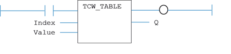

System Function
Writes to a TABLE location.
Index : INT;
TABLE index number
Value : LREAL;
TABLE value
Q : SINT;
Sets the VR at VR(index) to the given Value.
MyTCW_TABLE(Index, Value);

TrioBASIC Errors